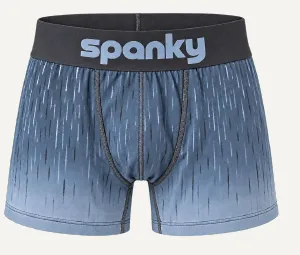
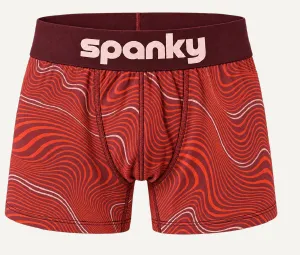
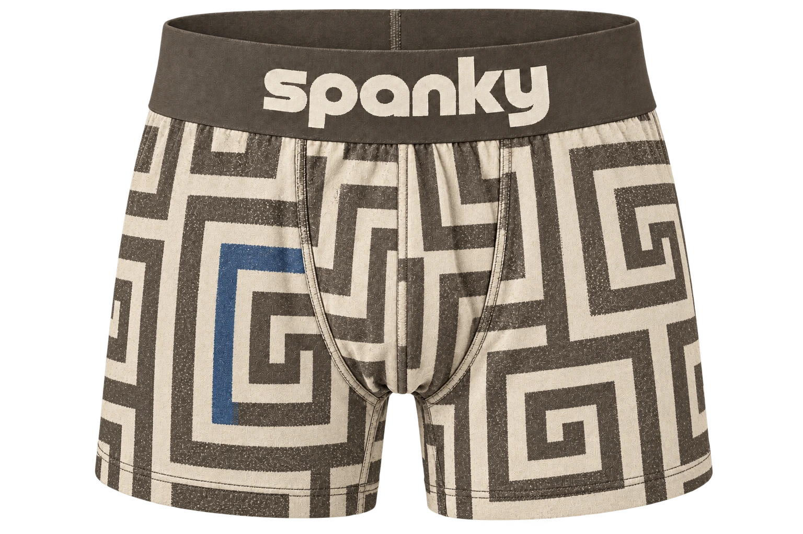
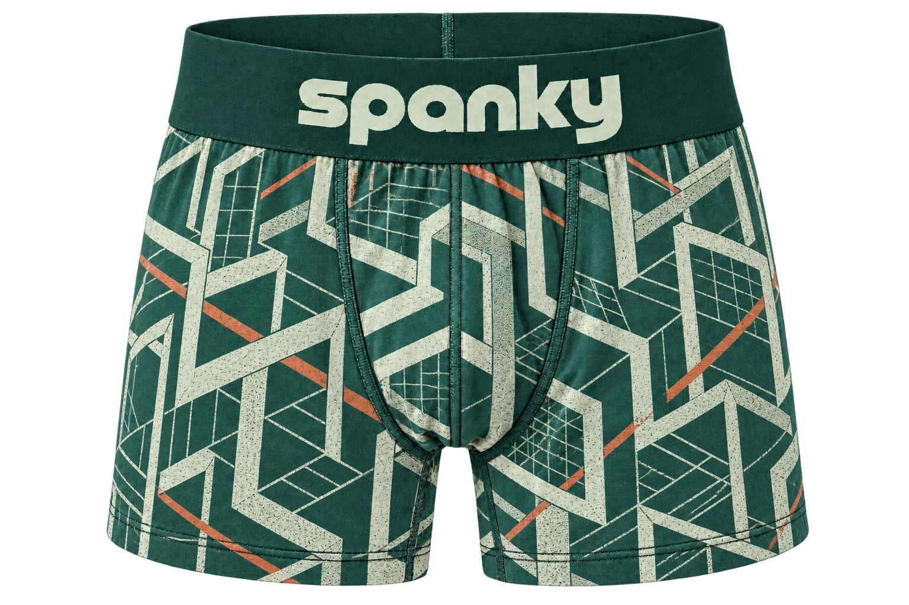
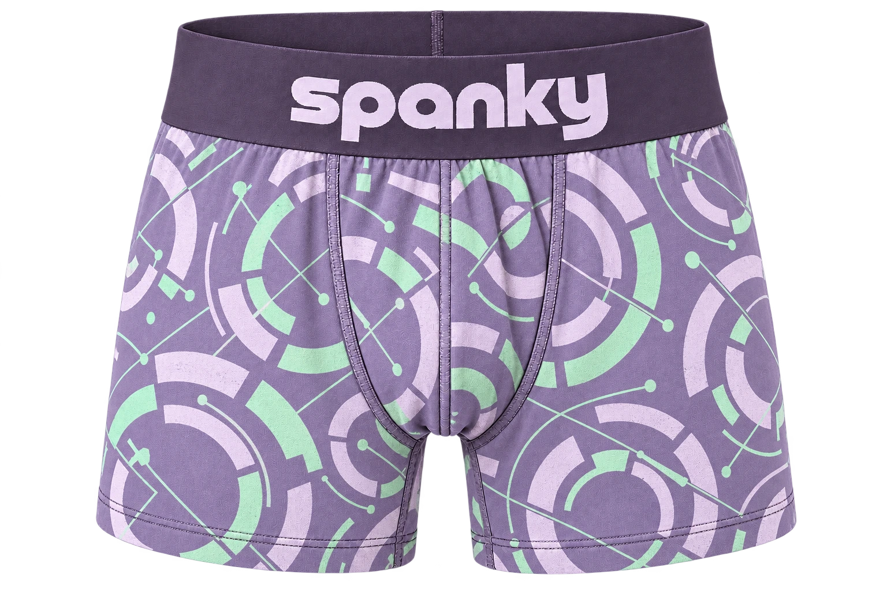

Depression
Vertical tear trails
EXPLORE THE COLLECTION ↗SPANKY uses underwear as a surface for emotional expression. A visible waistband carries the identity. Color and graphic density give each collection its own voice.
Anyone can experience mental health challenges. What someone is living with may remain unseen until they choose to share it.
SPANKY challenges the prejudice and social judgment that make openness feel difficult. Our purpose is to make room for honest expression, understanding and pride, without reducing a person to a diagnosis.

An intimate, usually hidden garment becomes a visible statement. Designed for sagging, the extended waistband and expressive graphics invite wearers to show what they choose, with confidence.
Visibility is an invitation, never an obligation. Wearing SPANKY can express personal experience, solidarity or support.
SHOP COLLECTION 01 ↗Inner experience becomes outward expression. A color, a pattern, a visible waistband: choose the statement that feels like you.
Honest expression.
Understanding.
Pride.
The seven concepts are artistic interpretations. Their colors and motifs are collection codes, not universal descriptions of a diagnosis.

Vertical tear trails
EXPLORE THE COLLECTION ↗
Rising and falling ribbons
EXPLORE THE COLLECTION ↗
Branching routes
EXPLORE THE COLLECTION ↗
Pressure and release
EXPLORE THE COLLECTION ↗
Returning loops
EXPLORE THE COLLECTION ↗
Shifted perspective
EXPLORE THE COLLECTION ↗
Offset fragments
EXPLORE THE COLLECTION ↗A quiet motif at a smaller scale.
A distinct graphic placed on the garment.
A larger motif with a stronger presence.
The concept extends across the whole surface.